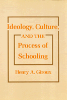

Lays bare the ideological and political character of the positivist rationality undergirding educational research
Lays bare the ideological and political character of the positivist rationality undergirding educational research


 Lays bare the ideological and political character of the positivist rationality undergirding educational research
Lays bare the ideological and political character of the positivist rationality undergirding educational research

|  |
Ideology, Culture and the Process of SchoolingHenry A. Girouxpaper EAN: 978-0-87722-370-2 (ISBN: 0-87722-370-X) |
"Giroux is an articulate, sensitive and balanced spokesperson [who] presents a thoughtful analysis of the relationship between knowledge and power and between social context and the school curriculum."
—Norman Henchey, Journal of Educational Thought
This book lays bare the ideological and political character of the positivist rationality that has been the primary theoretical underpinning of educational research in the United States. These assumptions have expressed themselves in the form and content of curriculum, classroom social relations, classroom cultural artifacts, and the experiences and beliefs of teachers and students. Have existing radical critiques provided the theoretical building blocks for a new theory of pedagogy?
The author attempts to move beyond the abstract, negative characteristics of many radical critiques, which are often based on false dualisms that fail to link structure and intentionally, content and process, ideology and hegemony, etc. He also is critical of the over-determined models of socialization and the abstract celebration of subjectivity that underlies much of the false utopianism of many radical perspectives. Professor Giroux begins to lay the theoretical groundwork for developing a radical pedagogy that connects critical theory with the need for social action in the interest of individual freedom and social reconstruction.
Excerpt available at www.temple.edu/tempress
"...a useful and important contribution to the area of curriculum theory. Giroux has articulated well some of the major tensions in radical educational theory and practice without abandoning the concern to establish a foundation for emancipatory cage."
—Walter Feinberg, Journal of Education
"Graduate students, as well as their professors, can learn a great deal from studying Ideology, Culture, and the Process of Schooling; furthermore, the excellent system of notes and references at the end of each chapter will introduce the reader into the world of ideas from which Giroux has taken his lessons."
—Educational Studies
Preface
Introduction
1. Schooling and the Culture of Positivism: Notes on the Death of History
2. Beyond the Limits of Radical Educational Reform: Toward a Critical Theory of Education
3. Beyond the Correspondence Theory: Notes on the Dynamics of Educational Reproduction and Transformation
4. Dialects and the Development of Curriculum Theory
5. Paulo Freire's Approach to Radical Educational Theory and Practice
6. Teacher Education and the Ideology of Social Control
Index
Henry A. Giroux is Assistant Professor of Education at Boston University. He is the co-editor of Curriculum and Instruction: Alternatives in Education and The Hidden Curriculum and Moral Education.
© 2015 Temple University. All Rights Reserved. This page: http://www.temple.edu/tempress/titles/264_reg.html.